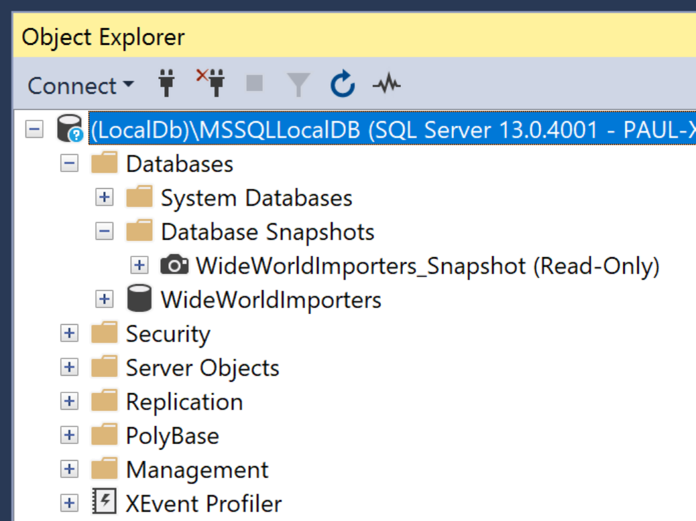
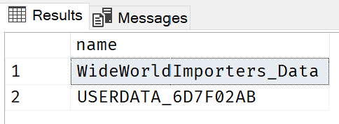

Keep your dev loop as short as possible with SQL Server Snapshots
tl;dr Sql Server Snapshots are a useful feature to reduce the pain of breaking changes when switching branches or when debugging scenarios that require complex data setups.
Problems
So what are the problems that snapshots can help with? Well, there are a couple of them that a developer might face daily…
Switching Branches
Often when developing, you need to switch between branches e.g. master -> my-feature-branch and back again. Or you might need to switch to someone-elses-feature-branch so that you can review or test someone else’s code. Often doing this puts your local database schema out of sync with the code and you end up with exceptions. In one branch there might be an extra column in a table for example.
Resolving these conflicts can be a pain. You waste time finding the problem and you have to come up with a script to fix it.
Debugging Complex Data Scenarios
Bugs have a habit of happening in dark, hard to reach corners of your application. They often require a very specific set of data to reproduce them. This data setup can be a tedious and time-consuming task. Often, during the act of reproducing the bug, the data scenario you just spent time carefully creating gets deleted or changed so that you have to then spend more time re-creating it to run it again.
Ideally, you want your dev loop to be as short as possible otherwise insights and discoveries about what might be causing this bug will take longer to achieve. So it would be really useful to have a way to instantly restore this data to its original state before the code was executed.
How can Snapshots help?
A snapshot of a Sql Server database is a point-in-time copy of a source Sql Server database.

A snapshot is somewhat similar to a .bak or .bacpac backup, in so much as they are all copies of the database. These methods though involve exporting a copy of the source database to a file which you can later restore when needed.
A snapshot is slightly different, it is also a point-in-time copy of your source database. When created it becomes an attached read-only copy of the source. A snapshot is shown in Sql Server Management Studio, under a menu folder called ‘Database Snapshots’ (shown above). You can access and browse these just like regular databases. They are read-only though so they can’t be modified.
You might be wondering, if a snapshot is read-only, what use can it be? Well, another cool feature of a database snapshot is that you can restore from them back to a regular database. And it’s fast. A lot faster than restoring from a .bak or .bacpac for example.
Let’s have a look at the process.
Working with Snapshots
Here are the typical steps of how you can work with a snapshot: -
- Create the known good state of local database (either manually or grab a copy of a production database).
- Create a snapshot of your local database in this known state that you’ll return to each time.
- Do the thing that messes up your local Db. i.e. Reproduce a bug that needs a complex data scenario (data gets ruined in the process) or make schema changes in another branch etc.
- Restore your local database from the snapshot.
- Repeat from step 3 (or 1) as needed!
Creating a Snapshot
So once your local source database is in the known good state that you wish to capture, you’re ready to create a snapshot of it.
NOTE: In these examples, I’ll be using the World Wide Importers example database which you can download from here.
Here’s what the SQL looks like for my WideWorldImporters database looks like.
DROP DATABASE IF EXISTS [WideWorldImporters_Snapshot];
CREATE DATABASE [WideWorldImporters_Snapshot] ON
(
NAME = 'WideWorldImporters_Data',
FILENAME = 'C:\MySnapshots\WideWorldImporters_Data.ss'
),
(
NAME = 'USERDATA_6D7F02AB',
FILENAME = 'C:\MySnapshots\USERDATA_6D7F02AB.ss'
)
AS SNAPSHOT OF [WideWorldImporters];
GO
First we drop any existing snapshot. This just makes it easier to quickly update the snapshot.
When creating a snapshot we need to make copies of each data file of the source database. In this example, we have two datafiles named WideWorldImporters_Data or USERDATA_6D7F02AB so there is a section for each in the CREATE statement. In each section, we specify the file where we’d like to save the snapshot file. The convention is to name these file with an .ss extension.
To find the names of your data files you can run the following SELECT statement and use the results to construct your own CREATE statement.
SELECT [name] FROM [sys].[master_files] WHERE [database_id] = DB_ID('WideWorldImporters') AND [type] = 0;

Restoring from a Snapshot
When we need to return our source database to it’s know state we can restore it from the snapshot. When we do this the snapshot remains unchanged. So we can restore from it as many times as we need to.
USE [Master];
GO
ALTER DATABASE [WideWorldImporters] SET SINGLE_USER WITH ROLLBACK IMMEDIATE;
RESTORE DATABASE [WideWorldImporters] FROM DATABASE_SNAPSHOT = 'WideWorldImporters_Snapshot';
ALTER DATABASE [WideWorldImporters] SET MULTI_USER;
GO
Firstly, because we need to make changes to our source database we need to first switch to master.
Then we put the source database into single-user mode and make sure any existing connections our application might have open are closed.
This makes sure we can then restore our database from the snapshot.
Finally, we put the freshly restore the database back into mutli-user mode so it can again begin accepting connections from out application.
That’s it. Your application database (WideWorldImporters) has now been re-created from the snapshot (WideWorldImporters_Snapshot).
Conclusion
Sql Server Snapshots are useful to keep your dev loop as short as possible by allowing you to return your local database back to a known state very quickly.
Thanks for reading.